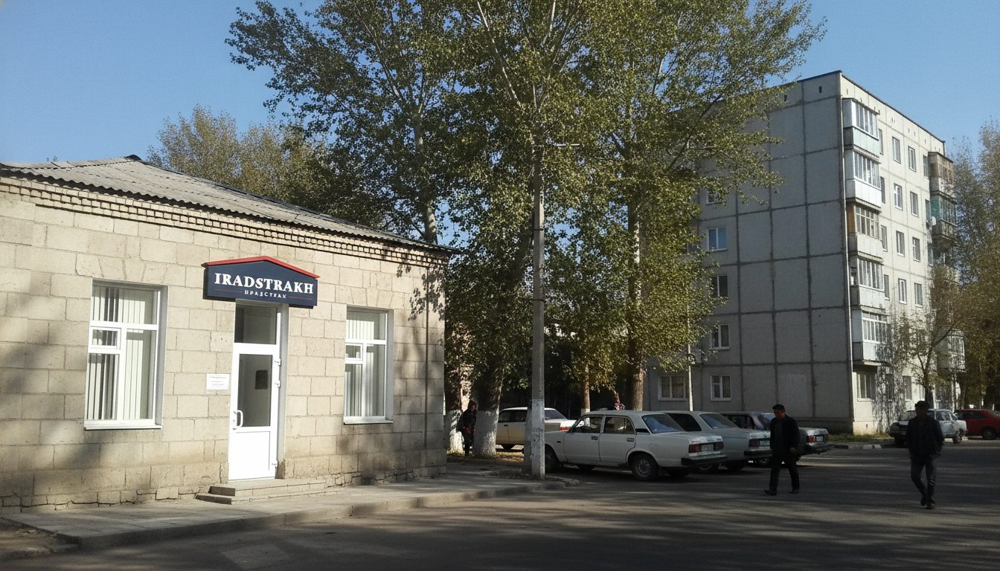

About the company
Iradstrakh, the State Insurance Company of Irad (Irad Mamlekettik Kamsyzdandyruu Kompaniyasy, Ирадстрах), is the insurer of the Zone. Head office in Talas, 61 offices, about 1,100 employees.

History
| Year | Event |
|---|---|
| 1946 | The Gosstrakh office of the Iradi SSR insures collective-farm livestock, crops and the homes of citizens. |
| 1994 | Reorganized under the territorial administration as the State Insurance Company of Irad. |
| 2007 | The company becomes the property of the Irad Special Economic Zone. |
| 2009 | Compulsory motor third-party insurance (Act № 09-15) from 1 April. |
| 2012 | New Rules of property insurance; earthquake added to home policies. |
| 2013 | Office at the Talas North Terminal for vehicles entering the Zone. |
| 2016 | Programmes of voluntary medical insurance for employers. |
| 2017 | New website. |
| 2026 | The website moves to iradstrakh.iradgov.org. |
Many clients still call us by the old name, Gosstrakh. That is also right.
What we do
- compulsory motor third-party insurance;
- compulsory insurance of the property of state enterprises and of mortgaged property;
- voluntary medical insurance (about 40,000 policyholders, mostly through employers);
- property and accident insurance of citizens;
- insurance of crops and livestock; cargo and liability insurance.
Policies are issued in som; for companies with foreign contracts some policies are issued in US dollars.
Management
| Position | Name | Reception of citizens |
|---|---|---|
| General Director | Jypar Sartbaeva | 2nd Wednesday of the month, 14:00–16:00, by appointment |
| First Deputy General Director (insurance) | — | Tuesdays 10:00–12:00 |
| Deputy General Director (claims) | — | Thursdays 14:00–17:00 |
| Chief Accountant | — |
Appointment for reception: +996-39-2-21-73-00, ext. 1.
Structure
Head office (Talas): departments of motor insurance, personal insurance, property and agricultural insurance, corporate clients, claims, reinsurance and reserves, accounting, legal, personnel, information technology. Branches: Nurzhan (12 offices), Iyık Janyl (5 offices), district offices.